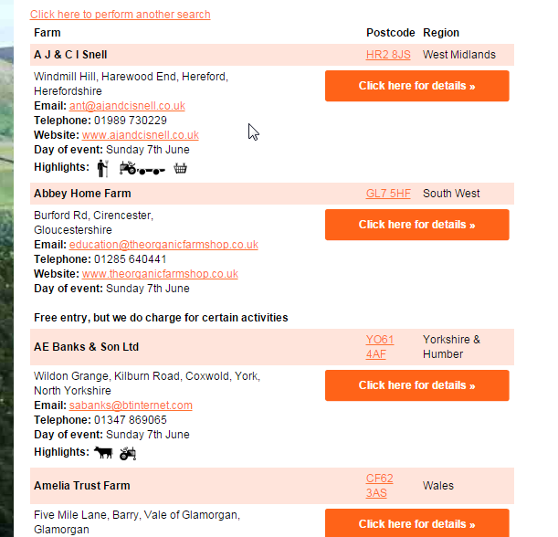

I like to visit farms that participate in the annual Open Farm Sunday, which is 7th June this year. But their web site - http://www.farmsunday.org - doesn't make it easy to find the farms nearest where I am or where I can easily get to.
Luckily they let you search for and list all of the farms on a single page, in a table that's pretty easy to screen scrape.

The key part of the HTML is the table tagged with the class "scrolllist" and the rows within it.
<table class="scrolllist" cellspacing="0" cellpadding="4" width="530" border="0">
<tbody><tr>
<th nowrap="nowrap" align="left">
Farm
</th>
<th nowrap="nowrap" align="left">
Postcode
</th>
<th nowrap="nowrap" align="left">
Region
</th>
</tr>
<tr class="farmevent">
<td align="left">
<strong>
A J & C I Snell</strong>
</td>
<td align="left">
<a href="https://www.google.com/maps/preview?q=HR2%208JS" target="_googlemap">
HR2 8JS</a>
</td>
<td align="left">
West Midlands
</td>
</tr>
<tr>
<td colspan="3" class="farmdescription">
<div style="float:left; width:522px;"><div class="navButton"
onmouseout="lowlight('b1047524');" onmouseover="highlight('b1047524');"
style="float: right; padding-left: 38px; margin-right: -38px;">
<span id="b1047524" class="navlink" style="color: white;">
<a href="http://www.farmsunday.org/ofs12b/visit/event_details.eb?guid=1OXH0BEN62.A4XWE17J3CL7C">Click here for details »</a>
</span>
</div>
Windmill Hill,
Harewood End,
Hereford, etc...
</div></td>
</tr>
</tbody></table>
Within the table, I'll want to skip over the header row, then from the <tr class="farmevent"> get the farm name text from the first <td>,
and get the postcode text from the second <td>.
From the next <tr> we can get the URL for displaying details about the farm from the "href" attribute
of the <a> within the <div class="navButton">.
For Java programmers, there's a really easy to use library for parsing HTML and accessing its data - http://jsoup.org/.
First, download the HTML containing the full list of
farms by visiting http://www.farmsunday.org/ofs12b/visit/findfarm.eb and doing
a search. Save the HTML to a local file, overwriting the sample downloaded.html.
Check the Maven pom.xml file which contins a dependency to fetch the jsoup library:
<dependency>
<!-- jsoup HTML parser library @ http://jsoup.org/ -->
<groupId>org.jsoup</groupId>
<artifactId>jsoup</artifactId>
<version>1.8.2</version>
</dependency>
The Java source is in ExtractFarmDetails.java:
package uk.co.mwink.openfarmsundayscraper;
import java.io.File;
import java.io.IOException;
import java.io.PrintStream;
import org.jsoup.Jsoup;
import org.jsoup.nodes.Document;
import org.jsoup.nodes.Element;
/**
* Screen scraper for building a Google Maps compatible CSV file from the Open Farm Sunday listings.
*/
public class ExtractFarmDetails {
public static void main(String[] args) throws IOException {
// The HTML, saved to a local file, resulting from a POSTed form.
File input = new File(args[0]);
PrintStream out = new PrintStream(new File(args[1]));
// Header for the CSV file.
out.printf("Name,Postcode,URL\n");
// Open the HTML, and reference the original web site.
Document doc = Jsoup.parse(input, "UTF-8", "http://www.farmsunday.org/");
// Search for <table class="scrolllist"> and return all of the <tr> elements within it.
Element[] rowElements = doc.select("table.scrolllist tr").toArray(new Element[0]);
// The table contains 1 header row, and 2 rows per farm.
for (int i = 0; i < (rowElements.length - 1) / 2; i++) {
// Get the alternating "farmevent" and description rows.
Element farmEvent = rowElements[i * 2 + 1];
Element farmDescription = rowElements[i * 2 + 2];
out.printf("%s,%s,%s\n",
// The farm name is in the 1st <td>.
noCommas(farmEvent.select("td:nth-child(1)").text()),
// The postcode is in the 2nd <td>.
noCommas(farmEvent.select("td:nth-child(2)").text()),
// Get the URL from the href attribute in the <a> within the <span class="navlink">
noCommas(farmDescription.select(".navlink a").attr("href")));
}
out.close();
}
// Mustn't have commas in the CSV data.
static String noCommas(String data) {
return data.replace(',', ';');
}
}
Run the program with the Maven commandline mvn compile exec:java. The pom.xml specifies the commandline
arguments downloaded.html locations.csv by default.
This should result in a locations.csv that starts like this if you've downloaded the full search results from
http://www.farmsunday.org/ofs12b/visit/findfarm.eb.
Name,Postcode,URL
A J & C I Snell,HR2 8JS,http://www.farmsunday.org/ofs12b/visit/event_details.eb?guid=1OXH0BEN62.A4XWE17J3CL7C
Abbey Home Farm,GL7 5HF,http://www.farmsunday.org/ofs12b/visit/event_details.eb?guid=1OXH0BEN62.A4YACVELJR9O4
AE Banks & Son Ltd,YO61 4AF,http://www.farmsunday.org/ofs12b/visit/event_details.eb?guid=1OXH0BEN62.A7631PLUJI7U7
Amelia Trust Farm,CF62 3AS,http://www.farmsunday.org/ofs12b/visit/event_details.eb?guid=1OXH0BEN62.A34B0EM72Y9DT
Apley Farm Shop,TF11 9EF,http://www.farmsunday.org/ofs12b/visit/event_details.eb?guid=1OXH0BEN62.A1C8CYNVR1UAA
Ash Tree Farm,DE6 3AL,http://www.farmsunday.org/ofs12b/visit/event_details.eb?guid=1OXH0BEN62.A7AFMSWAN9XA9
Askham Bryan College,YO23 3FR,http://www.farmsunday.org/ofs12b/visit/event_details.eb?guid=1OXH0BEN62.A6XO1R51RSTHP
Asney Park Farm,LL13 0DS,http://www.farmsunday.org/ofs12b/visit/event_details.eb?guid=1OXH0BEN62.A3CY2D2RWOMFA
Awnells Farm,GL19 4QB,http://www.farmsunday.org/ofs12b/visit/event_details.eb?guid=1OXH0BEN62.A6V7AOXZDOWA3
B R Brooks & Son,ME13 9DA,http://www.farmsunday.org/ofs12b/visit/event_details.eb?guid=1OXH0BEN62.A5QEKXSAQAG2T
Badlesmere Court Farm,ME13 0NL,http://www.farmsunday.org/ofs12b/visit/event_details.eb?guid=1OXH0BEN62.A44KMH4W1GYZU
Bakers of Haselbury Plucknett,TA18 7PH,http://www.farmsunday.org/ofs12b/visit/event_details.eb?guid=1OXH0BEN62.A2BJPL64S5X4B
Barleylands Farm,CM11 2UD,http://www.farmsunday.org/ofs12b/visit/event_details.eb?guid=1OXH0BEN62.A39YLYKXLILYC
Now go to Google Maps.
Click in the search text box and look for "My maps" in the list that drops down, and click on it.
Click on the "Create" button, and look for the "Import" command in the new map. After clicking on that you should select the locations.csv file you saved earler.
Google maps now asks which column contains the location information, so select "Postcode" and click "Continue".
Maps now wants to know which column specifies the title for the markers. Choose "Name" and click "Finish".
Maps now takes a while to import your data, and then displays the map with all of the farm locations on it.
You can now customize the map, name it, share it, and embed it within your own web site like this.
I can now easily see which farms are near me, and I can quickly click through to read what they're planning to show on the day.
And hopefully this quick run through will be helpful to anyone else thinking about scraping data out of other web sites to present it better.
Many thanks to Jonathan Hedley for producing jsoup which makes it so easy with CSS-style selectors.
Martin Wink, 9 May 2015